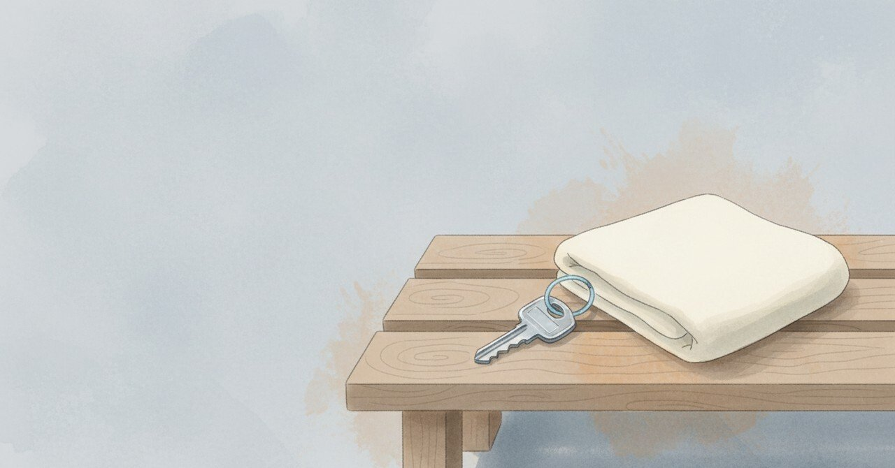

月1万円のジムに飛び込んだ日、不安を書き残していた （続編）

2026-04-23、1年半前の深夜に書かれた入会の日のメモを読み返していた。
今日の現場
個人開発の費用は少しずつ積み上がっている
ドメイン代、API利用料、サーバ代、画像生成のクレジット
どれも小さいけれど毎月出ていく
入るときに迷ったものほど、後から効いてくる
迷わず払えるものは、たぶん効き目も薄い
あの頃と今
2024年9月11日、深夜0時05分。スポーツジム初体験、と当時の日記に書いてある。「と言っても風呂とサウナしか今日は入っていないけど」と続けて。「月1万円で小さくは無い金額だし続けられるか不安であるが、飛び込んでみよう。何かが変わる」と書いている。
その日は、業務スーパーに食材の買い出しに行き、夜はトマト煮の残りを食べ、寝る前にゆで卵2つとサラダまで食べてしまった、と書き残していた。昼はうどん屋に行ったけど、出てきたのは実はきしめんだった、とも。陸運局にも行ったが手続きは完了せず、またリベンジだ、とある。
入会の決心と、食べ過ぎの反省と、きしめんを出された戸惑いと、陸運局のリベンジ宣言が、同じ夜に並んでいた。「飛び込んでみよう。何かが変わる」は、一日の他のちょっとした失敗と同じ温度で書かれていた。
頭の中
お金は未来への賭け金だと思う。安心して払える投資は、自分が既に理解しているものに対する支払い。迷って払う投資は、自分がまだ理解していない自分への支払い。
ただ、これは後付けの美談かもしれない。当時の自分は、未来のためというより、単に変わりたかっただけだと思う。きしめんを食べたついでに、ジムに入ったくらいの軽さだった気がする。軽くなければ、飛び込めなかったのかもしれない。
まだ途中のこと
今払っている中で、「不安なまま払っている」ものは、どれくらい残っているだろうか。ほとんど迷わなくなっていたら、たぶん守りに入り始めている。
あなたが最近飛び込んだことは、何でしたか。
#AIと始めてみた #日記 #習慣化 #自己投資 #挑戦